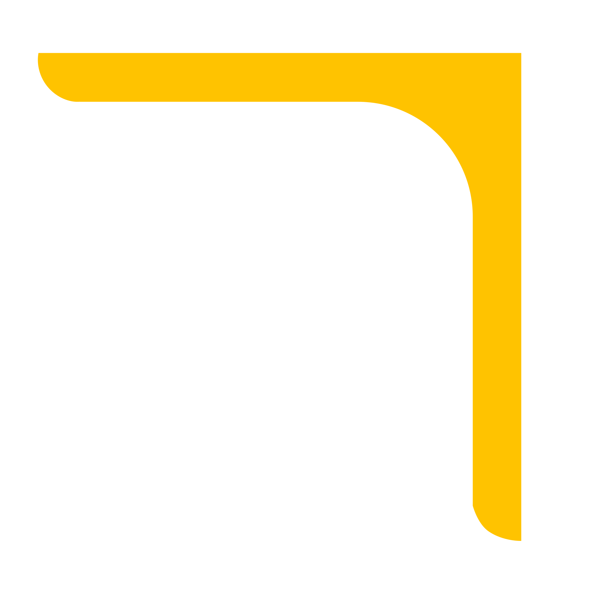
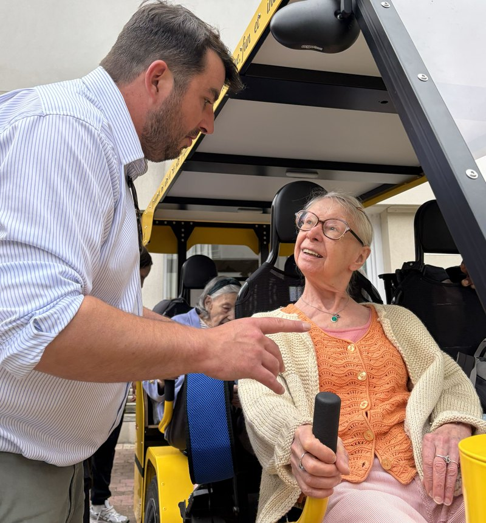
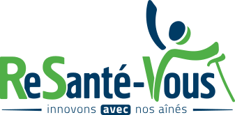

1Tonus musculaire
Un capteur de couple sur chaque pédalier mesure l'effort fourni (en Watt).
Résidences autonomie
En résidence autonomie, tous les profils se côtoient :
résidents très actifs, premières pertes d'autonomie. Notre solution :
mettre le ludique au service du thérapeutique. Pouvoir choisir entre les deux, librement !

Pour commencer
380 € HT
Séance découverte, sans engagement.
En abonnement, le coût descend jusqu'à 16 €/résident (sur la base d'une séance de 2h30), et plusieurs aides le financent. Voir les financements
Chacun pédale à son rythme, sans effort imposé et sans compétition.
Le OuiCycle intrigue : on vient le voir, on demande à essayer.
La première séance devient celle que l'on attend chaque semaine.
Des résidents qui ne se parlaient plus partagent à nouveau des moments ensemble. Le lien social se reconstruit naturellement pendant les sorties.

La pratique régulière entretient l'équilibre, la coordination et la confiance dans les déplacements. Elle aide à prévenir les chutes.
Une activité physique adaptée à part entière, mesurée à chaque séance.
Les sorties créent une vraie dynamique collective : les résidents se retrouvent autour d'un projet partagé, et beaucoup renouent avec une activité de plein air qu'ils pensaient hors de portée.

Le véhicule et sa maintenance
La conduite et l'encadrement
L'assurance RC Pro
La coordination avec votre équipe

Prise en compte de vos objectifs et évaluation de vos besoins.
Rencontre avec votre personnel, mise en adéquation avec vos besoins.
Séances de 2h à 2h30 intégrant 3 à 4 sorties. Abonnement de 6 à 12 mois.
Rapport individualisé et collectif, utile à votre projet d'activité physique adaptée.
L'usage, c'est vous qui le décidez : un parcours de cyclothérapie pour ceux qui en ont besoin, une balade pour ceux qui veulent simplement sortir.
Une activité visible, qui dynamise la vie collective et vous distingue auprès des familles.
Conforme à la norme européenne EN 15194, autorisé sur les pistes cyclables, 25 km/h max.
Elle prend le relais dès que c'est nécessaire : ni la côte ni le retour ne sont un souci.
Sièges ajustables d'une seule poignée, de 1,55 m à 1,95 m. Position assis-couché, maintien par sangles et ceintures.
Marche-pied bas et aide au transfert : chaque passager est installé et sécurisé avant le départ. Accessibilité PMR.


Un même équipier conduit le véhicule et anime la séance.
Chaque conducteur-animateur est formé à l'activité physique adaptée par notre partenaire ReSantéVous.

C'est ce qui distingue une sortie encadrée d'une simple promenade.
Rien ne remplace une démonstration sur site. On vient à vous, sans engagement : réponse sous 48 h.